codly.sublang-block
The generated element that holds one syntax-highlighted language range inside a Codly code block.
Signature
codly.sublang-block(body, idx)Codly creates this element while rendering codly.new. In normal use, configure language ranges with the block’s sublangs field and codly.sublang, rather than constructing this element directly. Both required fields are positional in the generated element constructor.
Fields
| Field | Type | Default | Meaning |
|---|---|---|---|
body |
content |
Required, positional | Raw block content highlighted with the range's language. |
idx |
int |
Required, positional | Zero-based index of this range in the block's sublangs array. |
Behavior
For each configured sublanguage range, Codly creates a raw block using that range’s language and stores it in body. Its display preserves the raw block’s syntax highlighting while attaching metadata to each source line so the block renderer can apply the corresponding highlighted line content. idx distinguishes ranges in the same code block; it is assigned from their order in sublangs.
Example
The shell lines use the outer language, while the Rust lines use the language selected for source lines 2–4.
#import "@preview/codly:2.0.0" as codly
#codly.new(
```sh
> cat test.rs
fn main() {
println!("hello");
}
> exit
```,
sublangs: ((start: 2, end: 4, lang: "rs"),),
)Edit & run on your device
The highlighted source and output update after you stop typing. Copy code includes your edits.
